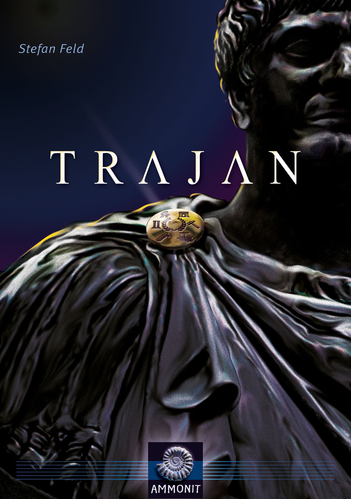

HU006
圖拉真
遊戲人數：２－４人
遊戲時長：６０－１２０分鐘
建議年齡：１３歲以上
產品介紹
西元１１０年是羅馬帝國最光榮的一年。
圖拉真，羅馬帝國五賢帝之一，是第一位非義大利出生的羅馬皇帝。
他在位時立下顯赫的戰功，擴展極盛的帝國領土；當時的元老院曾贈給他「最優秀的第一公民」的稱號。
現在，運用你的智慧和謀略來統治羅馬王國，把握你每次行動的時機，帶領你的將士擊敗對手獲得勝利吧！

HU006
遊戲人數：２－４人
遊戲時長：６０－１２０分鐘
建議年齡：１３歲以上
西元１１０年是羅馬帝國最光榮的一年。
圖拉真，羅馬帝國五賢帝之一，是第一位非義大利出生的羅馬皇帝。
他在位時立下顯赫的戰功，擴展極盛的帝國領土；當時的元老院曾贈給他「最優秀的第一公民」的稱號。
現在，運用你的智慧和謀略來統治羅馬王國，把握你每次行動的時機，帶領你的將士擊敗對手獲得勝利吧！